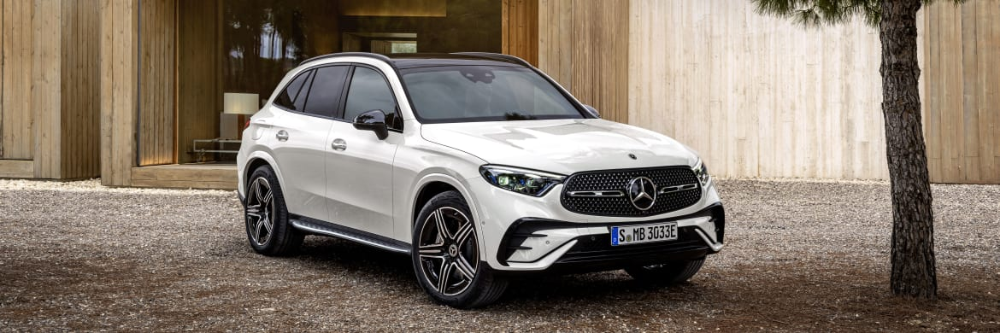
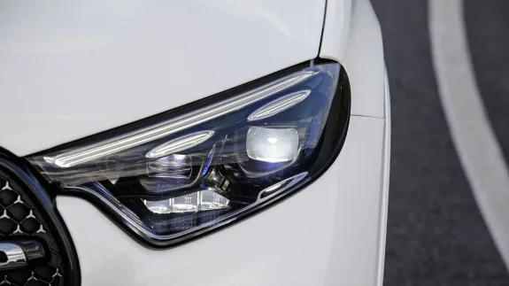
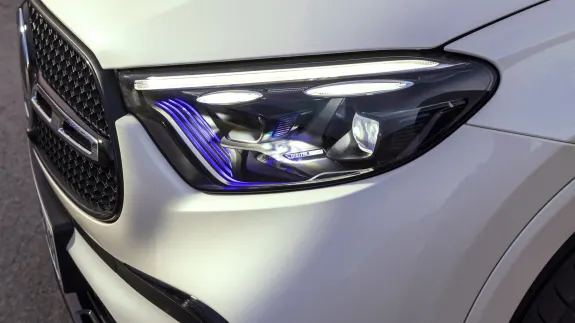
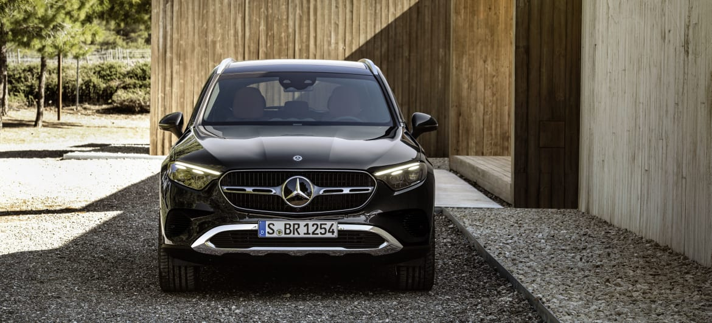
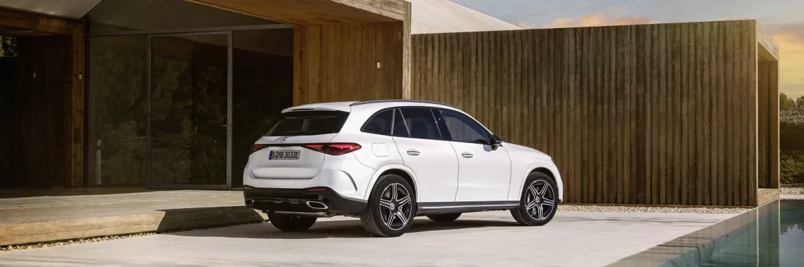
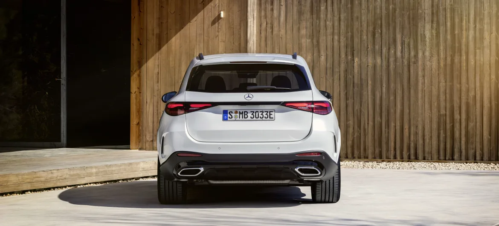
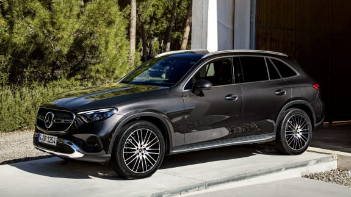
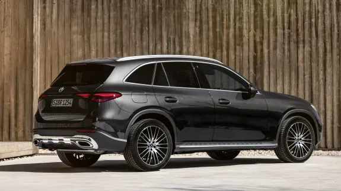
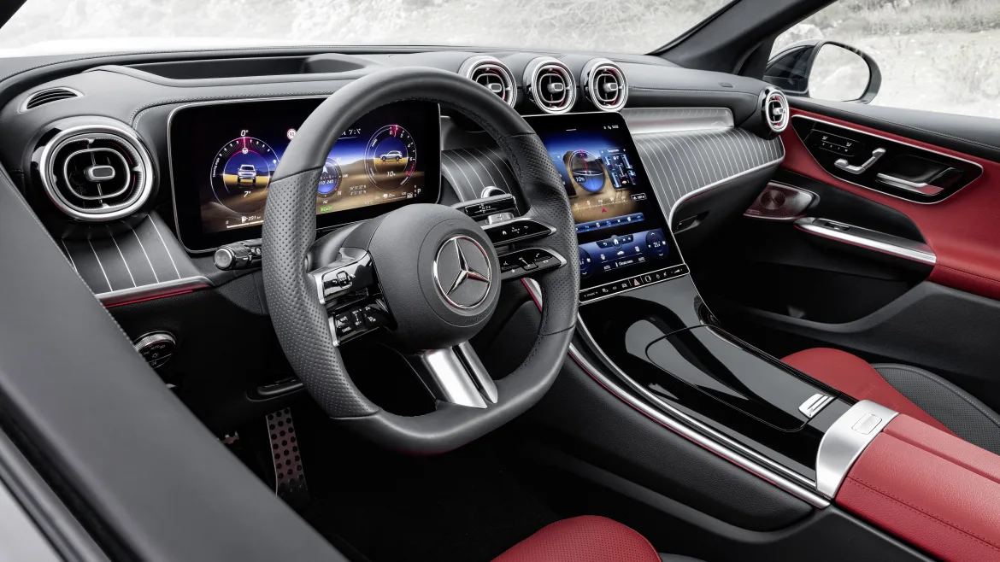
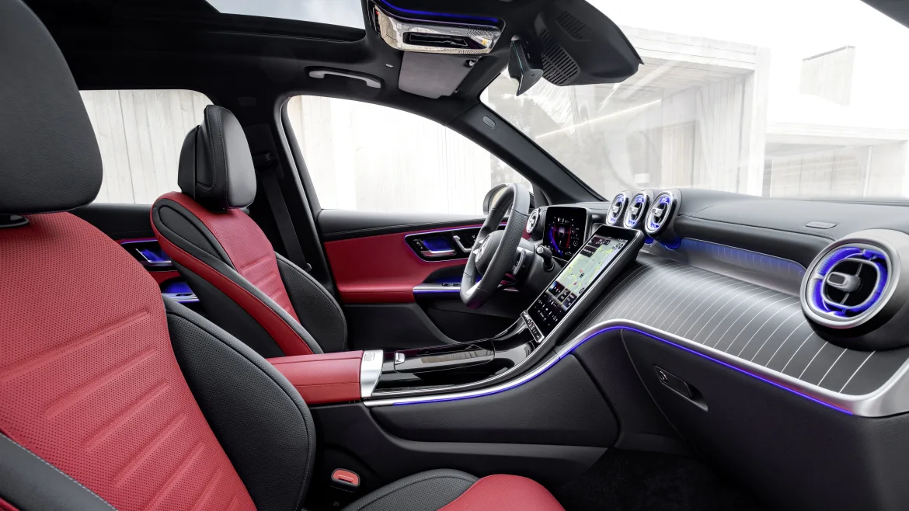

Le Mercedes-Benz GLC est le SUV phare de la marque à l'étoile mais aussi du segment des SUV familiaux. Le GLC est toujours précurseur dans de nombreux domaines et la nouvelle génération ne déroge pas à la règle. En effet, toutes ses motorisations sont électrifiées et les déclinaisons hybrides rechargeables sont capables d'offrir jusqu'à 120 km d'autonomie électrique. Enfin, son habitacle ultra technologique marque une réelle révolution.
Le GLC a toujours su profiter d'un design intemporel à la fois très flatteur et valorisant. Mercedes-Benz poursuit dans cette voie pour le nouveau GLC. Si l'on reconnait toujours un GLC dans les proportions et les courbes, il profite d'un dessin résolument nouveau et plus moderne.
La face avant du nouveau GLC arbore de nouveaux phares Full LED plus effilés pouvant accueillir la technologie Digital Light. Ceux-ci sont capables d'afficher des informations sur la route ou de mettre en évidence des éléments visibles sur la route. Ils disposent d'une originale signature lumineuse à deux niveaux.
|  |  |
Mercedes-Benz réitère sa célèbre calandre inversée. Comme sur les derniers modèles de la marque, celle-ci peut intégrer un motif à étoiles très original. Les phares semblent directement reliés à la calandre afin d'accentuer visuellement la largeur du nouveau GLC.
C'est de profil que l'on découvre des similarités avec le précédent GLC. En effet, de nombreux éléments rappellent l'ancienne génération du GLC et tout particulièrement le vitrage qui reprend la même forme en pointe. Le nouveau GLC gagne 6 cm en longueur pour atteindre 4,71 mètres. Ces centimètres supplémentaires n'augmentent pas l'empattement et n'améliorent que très peu l'habitabilité arrière déjà excellente sur le précédent GLC. En revanche, le volume de coffre gagne 50 L pour atteindre 600 L.
Le profil est sublimé par de nouvelles jantes pouvant atteindre 20 pouces (à partir de 18 pouces).
Enfin, l'arrière est certainement la partie qui évolue le plus. La face arrière est nettement plus arrondie et lisse que celle de son prédécesseur. Le nouveau GLC se rapproche des dernières Classe S et Classe C avec ses nouveaux feux. Ils reprennent le dessin en forme de goutte d'eau et profitent d'une signature lumineuse en deux parties et en 3D inédite. Pour la première fois sur un GLC, les feux sont reliés par un bandeau noir brillant. Cet ensemble très allongé se prolonge sur les ailes arrière, permettant d'élargir visuellement le nouveau GLC.
elon la finition choisie, le nouveau GLC peut adopter un style baroudeur avec le pack Avantgarde, ou sportif en optant pour le pack AMG Line.
|  |  |
Sur le segment des SUV, l'intérieur du nouveau GLC pose de nouveaux jalons. Extrêmement technologique avec ses grands écrans, son très haut niveau de personnalisation et sa pureté font rentrer le nouveau GLC dans une nouvelle ère encore jamais atteinte chez la concurrence.
Deux écrans prennent place à bord du nouveau GLC. Le premier de 12,3 pouces prend place derrière le nouveau volant sport tactile. Vous trouverez sur cet écran toutes les informations liées à la conduite : vitesse, conduite semi-autonome, info-divertissement, navigation... Cet écran peut-être associé à un affichage tête haute en réalité augmentée.
Le deuxième écran se loge entre le conducteur et son passager. D'une diagonale de 11,9 pouces, il est positionné verticalement et légèrement orienté vers le conducteur. Il semble flotter sur la planche de bord. Cet écran permet de contrôler l'ensemble des fonctionnalités du nouveau GLC.
Au-dessus de cet écran se trouvent 3 aérateurs en finition aluminium qui, tout comme les autres aérateurs de l'habitacle, profitent d'un éclairage d'ambiance personnalisable. D'ailleurs, ce dernier ne se limite pas qu'aux aérateurs. Mercedes-Benz est passé maître dans l'art de proposer une expérience unique au sein de ses véhicules. Des bandeaux LED sont intégrés dans tous les recoins de l'habitacle du nouveau GLC pour diffuser une lumière directe ou indirecte.
Pour améliorer le confort des passagers, les sièges ont été revus pour paraître plus légers tout en étant plus confortables et enveloppants. Ceux-ci sont chauffants de série.
Par ailleurs, vous trouverez désormais des accoudoirs sur toute la longueur des portes.
Bien entendu, cet habitacle dispose de MBUX dans sa dernière version bien plus performante qu'auparavant sur l'assistant vocal (il s'agissait déjà de la référence).
Jamais un GLC n'a été aussi luxueux dans sa présentation, sa finition et le choix de ses matériaux alternant entre cuir, piano black et aluminium.